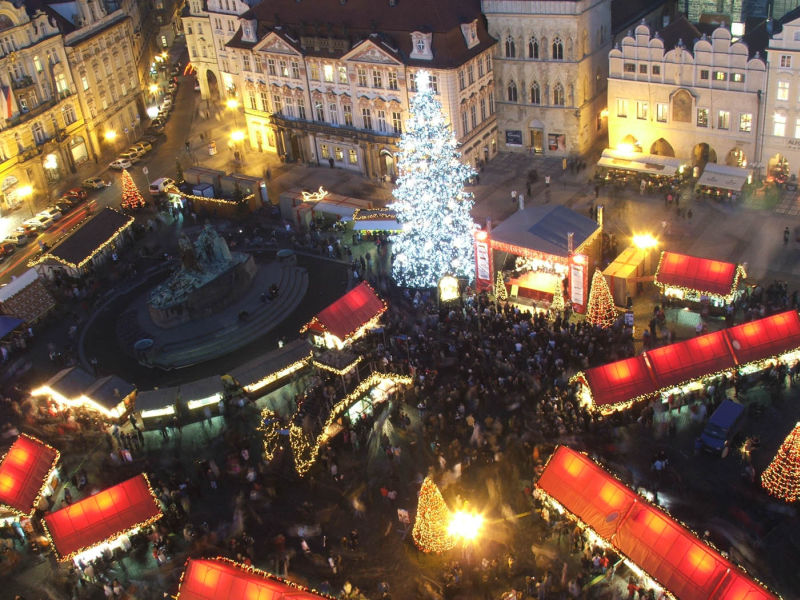
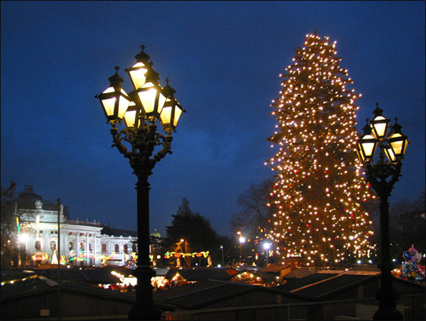
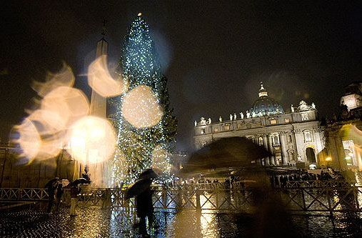
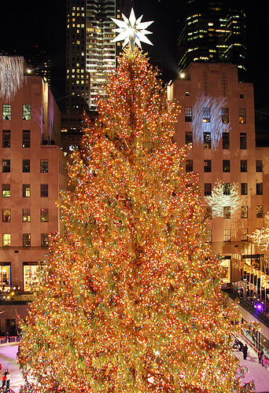
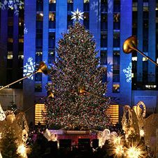
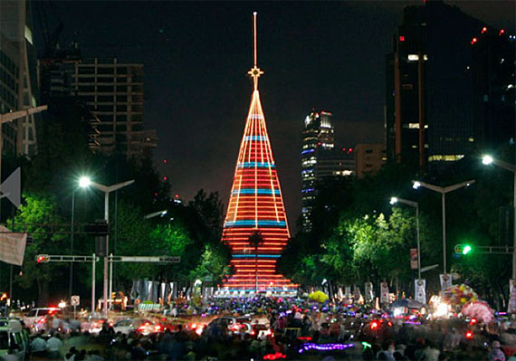
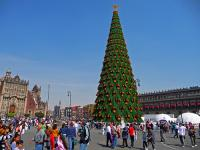
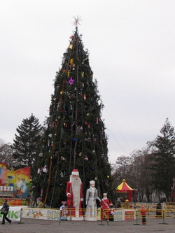
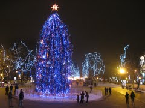

|
Наближаються довгоочікувані новорічні свята. І, мабуть для кожного з нас вони в першу чергу пов'язані з прикрашанням новорічної ялинки, тим самим нагадуючи нам смак дитинства.
Новорічна ялинка - атрибут святкування Нового року і Різдва в християнських країнах. Новорічна ялинка є хвойним деревом (переважно ялина, ялиця або сосна), прикрашеним гірляндами, скляними і пластмасовими іграшками, свічками і солодощами. Встановлюється на час проведення свят Різдва і Нового Року у будинках або на вулиці.
Історія новорічної ялинки.
Витоки цієї красивої традиції витікають з берегів верхнього Рейну, перш за все з Ельзаса. У XVI столітті під Різдво гільдії і цехові організації з області Алеманської оюласті почали встановлювати "різдвяне дерево". Воно не було ще центром родинного свята, як це стало пізніше, а було міською і суспільною подією. Як правило, дерево підвішувалося до стелі і інколи навіть верхівкою вниз. Використовували для цієї мети спочатку не ялину, а бук. По закінченню свята дітям дозволялося струшувати з дерева плоди і солодощі. У 1708 році в листі до дочки герцогиня Елізабет-Шарлота Орлеанська (уродженка Пфальца) пише, що в Німеччині на Різдво кладуть на столики для дітей подарунки і ставлять деревця зі свічками на гілках.
До середини XVIII століття ялинка існувала вже в сучасному вигляді. У романі "Страждання молодого Вертера" І. В. Гете, що вийшов в 1774 році, пише: "Вона упорядковувала іграшки, які приготувала до свята своїм молодшим братам і сестрам. Він заговорив про те, як зрадіють малята, і пригадав ті часи, коли несподівано розкриті двері і видовище нарядної ялинки з восковими свічками, солодощами і яблуками приводило його в невимовний захват". Ялинку в Німеччині та в інших країнах спочатку ставили в містах. Центром поширення її в Австрійській імперії став Відень, де ялинка в XVIII столітті була пов'язана з Николіним днем. У 1820 році ялина з'явилася в Празі; а з початку XIX століття стала відома і в скандинавських країнах.
Звичай ставити ялинку йшов від вищих шарів суспільства. Так, в Англії вперше ялинку нарядила німецька принцеса, що стала дружиною Георга III, а в 1840 році у Віндзоре ялинку для дітей влаштувала королева Вікторія зі своїм німецьким чоловіком Альбертом Кобургським.
Під впливом міста ялинку стали встановлювати спочатку в сільських школах, а потім звичай поширився і на селянські будинки. Німецькі іммігранти XIX століття завезли звичай прикрашати ялинку і до Америки, де її з часом стали ставити на площах.
Ялинка проникла і в мусульманські країни. Наприклад, в 1960-і роки її прикрашали в Тегерані і Марокко. До другої світової війни ялину наряджали і в Туреччині, але цей звичай був заборонений Кемалем Атарюком в 1936 році з метою збереження лісу. У багатьох країнах, де немає ялин, їх замінюють деревами інших видів.
Що ж сприяло поширенню звичаю прикрашати різдвяно-новорічну ялинку? Деякі вважають, що це сталося із-за віри в надприродні властивості ялиці: в те, що колючі голки захищають від відьом і інших злих сил. А німецький дослідник Е. Могк вважав, що попередниками ялинки було гілля плодових дерев, які ставили в будинках у воду задовго до Різдва, щоб вони зацвіли до святкового дня. По його припущенню, з побоювання, що гілки з якої-небудь причини не зацвітуть (а це була погана ознака), їх стали замінювати вічнозеленою ялинкою. Ще одна точка зору: ялина, прикрашена плодами, має своїм прообразом біблійське "райське дерево". Цікаво і те, що, не дивлячись на язичницькі відтінки обряду новорічної ялинки, з часом її стали ставити і в церквах.
Можуть бути різні варіанти новорічного оформлення будинку в Чернівцях, наприклад:
Східний - сотні паперових ліхтариків освітять таємничим світлом кожен куточок котеджу, кожну доріжку у дворі, містичний дзвін дзвіночків розполохає всіх злих духів, а китайські дракони "заховаються" на даху. Строго за східними канонами, індивідуально для кожної кімнати буде підібрана внутрішня обстановка і східна романтика і витонченість оселяться у вас вдома на всі свята.
Англійський - ангели з голубками і шкарпеточки для подарунків на каміні, ялинові гілки з кулями і паперові гірлянди, запах кориці і картатий плед на кріслі-гойдалці, вітальні листівки і хлопавки-сюрпризи принесуть у ваш будинок дух класичного британського різдва!
Слов'янський народний - ваш дім перетвориться на казковий будиночок! Посуд на святковому столі перетвориться на дерев'яний, бра і настільні лампи замінять лампади, а великий самовар, що шумить в кутку, додасть сільського комфорту в святковий образ вашого будинку.
Особливості святкування.
Найбільші столиці Європи (Мадрид, Лондон, Париж, Рим, Київ, Варшава, Москва) та інші міста встановлюють на найбільших площах або в туристичних місцях головні новорічні дерева. В процесі розробки дизайну прикраси таких дерев беруть участь провідні фахівці і представники світу моди. Встановлення, прикраса і запалювання головних (центральних) новорічних ялинок є традицією безлічі міст яка притягає туристів і городян напередодні Нового Року.
Традиційно (з 1946 року), ялинка заввишки 20 метрів встановлюється в Лондоні до Різдва на Трафальгарській площі.
 
Цю ялинку присилає в Англію королівська сім'я Норвегії на знак вдячності за звільнення країни від німецької окупації англійськими військами під час Другої світової війни. Під цією ялинкою в передріздвяні дні збираються тисячі англійців і співають різдвяні гімни. Традиційно, ялинку на Трафальгарській площі прикрашають тільки вертикальні гірлянди з лампочок.
У Празі новорічна ялинка традиційно встановлюється на Староместській площі.

Традиційно навколо головної чеської ялинки проходить різдвяний ярмарок.
У Австрії ялинку встановлюють на ратушній площі у Відні.

У Римі ялинку встановлюють на площі Святого Петра. Згідно із звичаєм, що склався, щороку ялинку Ватикану приносить в дар одне з європейських держав.

До речі новорічну ялинку 2012 року привезуть з України, а прикрашати її будуть в українському стилі! Цей звичай був введений Папою Іоанном Павлом II в 1982 році. Після закінчення різдвяного періоду деревина "головної ялинки Католицької Церкви" йде на виготовлення предметів, прибутки від продажу яких спрямовуються на надання допомоги бідним.
У Нью-Йорку ялинка встановлюється перед Рокфеллер-центром.

На цьому місці ялинка традиційно встановлюється з 1931 року. Гірлянди складаються з 30 тисяч лампочок. На вершині красується кришталева зірка 2,7 метри в діаметрі, що виблискує діамантами Сваровскі.
Одна з найоригінальніших - плавуча ялинка в Ріо-де-Жанейро.
Її висота - 85 метрів, а вага - 530 тонн. Ялинка, встановлена на озері Лагоа, зроблена з металевих конструкцій. У неї вмонтований електронний дзвін, виконуючий різдвяні мелодії. У гірлянді більше 3 мільйонів лампочок, якими управляє комп'ютер. По вихідних з ялинки б'є салют. Кілька років тому новорічна ялинка в Ріо-де-Жанейро увійшла до Книги рекордів Гіннесу. Плавучу ялинку в Ріо встановлюють вже упродовж 12 років.
У грудні 2009 року столиці Мексики Мехіко вдалося встановити новий рекорд Гіннесу, встановивши найбільшу різдвяну ялинку у світі заввишки 110.35 метрів (висота 40-поверхової будівлі), діаметром - 35 метрів і загальний вагою її металевих конструкцій і прикрас 330 тонн. Велетенська ялина встановлена в районі проспекту Пасео-де-ла-реформа.

Приміром у Чернівцях до вибору ялинки підходять з особливою відповідальністю – на її пошук вирушають у Карпати, де серед засніжених, могутніх гір височать та ваблять своєю неповторною красою стрункі смереки…

І ось вона вже стоїть на місцевій площі, вся прикрашена та чарівна, звідки помандрує у свою новорічну мандрівку, даруючи людям незабутні враження.
Для того, щоб прикрасити новорічну ялинку зателефонуйте +38 (050) 912-68-41, будемо раді Вам допомогти! |